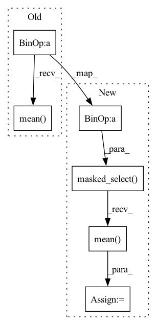

Pattern ID :24432

Before Change
torch.norm(y[:, 1:] - y[:, :-1], p=1, dim=-1).mean() / \
self.num_q + \
self.lambda_w2 * \
(torch.norm(y[:, 1:] - y[:, :-1], p=2, dim=-1) ** 2)\
.mean() / \
self.num_q
loss.backward()
opt.step()
After Change
torch.norm(y[:, 1:] - y[:, :-1], p=1, dim=-1),
m[:, 1:]
)
loss_w2 = torch.masked_select(
(torch.norm(y[:, 1:] - y[:, :-1], p=2, dim=-1) ** 2),
m[:, 1:]
)
opt.zero_grad()
loss = \
binary_cross_entropy(y_next, rshft) + \
self.lambda_r * binary_cross_entropy(y_curr, r) + \
self.lambda_w1 * loss_w1.mean() / self.num_q + \
self.lambda_w2 * loss_w2.mean() / self.num_q
loss.backward()
opt.step()
In pattern: SUPERPATTERN
Frequency: 3
Non-data size: 6
Instances
Fragment ID: 75895920
Project Name: hcnoh/knowledge-tracing-collection-pytorch
Commit Name: e0a0818a9fb4fbab884ba54f77e8e2d6cd66cf51
Time: 2021-10-08
Author: rhc0624@gmail.com
File Name: models/dkt_plus.py
M Class Name: DKTPlus
N Class Name: DKTPlus
M Method Name: train_model(6)
N Method Name: train_model(6)
M Parent Class: Module
N Parent Class: Module
M File Name: models/dkt_plus.py
N File Name: models/dkt_plus.py
M Start Line: 91
M End Line: 100
N Start Line: 90
N End Line: 104
'>
Before Change
logits_ba = torch.matmul(z_j, z_i.T) // NxN
avg_self_similarity = logits_ab.diag().mean().item()
avg_other_similarity = logits_ab.masked_select(~torch.eye(batch_size, dtype=bool)).mean().item()
sb_logger.record("avg_self_similarity", avg_self_similarity)
sb_logger.record("avg_other_similarity", avg_other_similarity)
After Change
logits_ba = torch.matmul(z_j, z_i.T) // NxN
avg_self_similarity = logits_ab.diag().mean().item()
logits_other_sim_mask = ~torch.eye(batch_size, dtype=bool, device=logits_ab.device)
avg_other_similarity = logits_ab.masked_select(logits_other_sim_mask).mean().item()
sb_logger.record("avg_self_similarity", avg_self_similarity)
sb_logger.record("avg_other_similarity", avg_other_similarity)
'>
Fragment ID: 75895921
Project Name: humancompatibleai/eirli
Commit Name: 0399d5ee75b1d0e5783f377d505366862a317577
Time: 2020-08-31
Author: sam@qxcv.net
File Name: src/il_representations/algos/losses.py
M Class Name: SymmetricContrastiveLoss
N Class Name: SymmetricContrastiveLoss
M Method Name: __call__(4)
N Method Name: __call__(4)
M Parent Class: RepresentationLoss
N Parent Class: RepresentationLoss
M File Name: src/il_representations/algos/losses.py
N File Name: src/il_representations/algos/losses.py
M Start Line: 204
M End Line: 208
N Start Line: 204
N End Line: 209
'>
Before Change
logits_ba = torch.matmul(z_j, z_i.T) // NxN
avg_self_similarity = logits_ab.diag().mean().item()
avg_other_similarity = logits_ab.masked_select(~torch.eye(batch_size, dtype=bool)).mean().item()
sb_logger.record("avg_self_similarity", avg_self_similarity)
sb_logger.record("avg_other_similarity", avg_other_similarity)
After Change
logits_ba = torch.matmul(z_j, z_i.T) // NxN
avg_self_similarity = logits_ab.diag().mean().item()
logits_other_sim_mask = ~torch.eye(batch_size, dtype=bool, device=logits_ab.device)
avg_other_similarity = logits_ab.masked_select(logits_other_sim_mask).mean().item()
sb_logger.record("avg_self_similarity", avg_self_similarity)
sb_logger.record("avg_other_similarity", avg_other_similarity)
'>
Fragment ID: 75895919
Project Name: humancompatibleai/eirli
Commit Name: ba441307091690a629a3b699f9dced09cc1d37fb
Time: 2020-08-31
Author: sam@qxcv.net
File Name: src/il_representations/algos/losses.py
M Class Name: SymmetricContrastiveLoss
N Class Name: SymmetricContrastiveLoss
M Method Name: __call__(4)
N Method Name: __call__(4)
M Parent Class: RepresentationLoss
N Parent Class: RepresentationLoss
M File Name: src/il_representations/algos/losses.py
N File Name: src/il_representations/algos/losses.py
M Start Line: 204
M End Line: 208
N Start Line: 204
N End Line: 209